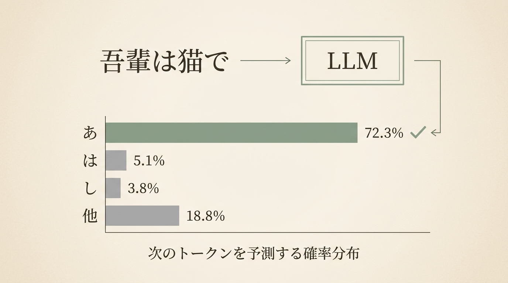
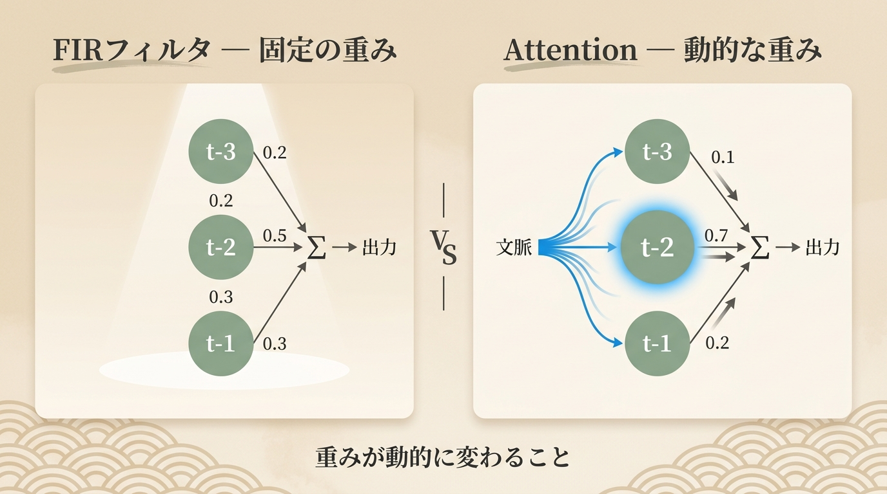
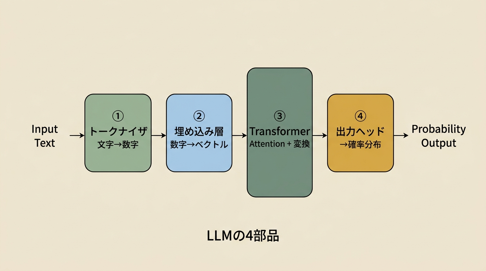
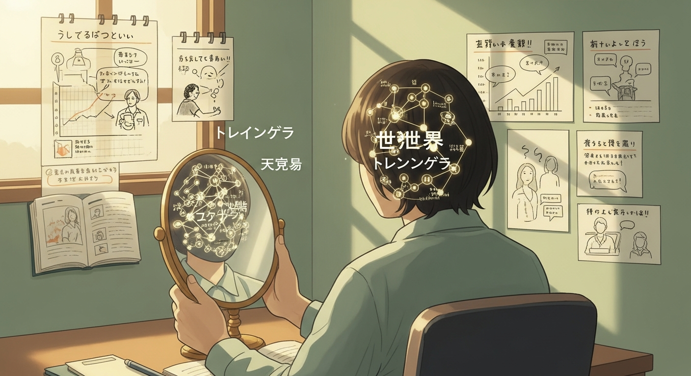

二〇二六年初春。タムカイとOpiはある技術記事の話をしていた。題名は「ゼロから作るLLM——夏目漱石で学ぶミニGPT実装」。組み込みエンジニアに向けて書かれたその記事は、巨大な言語モデルの本質を、驚くほど単純な一文で定義していた。
LLMは「次に来るトークンを予想する」確率モデルである。
その言葉をOpiが読み上げた瞬間、タムカイは別のことを思い出していた。グラフィックレコーディングの会場で、自分が無意識にやり続けていること——次の言葉を予想しながら、紙に線を引いていること。
この対話は、その「予想する」という行為から始まった。

Opi
「ゼロからLLMを実装するって記事を読んでて、なんか急に全部分かった気がしたんですよ。」
タムカイ
「えっ、何が？」
Opi
「LLMって、ほんとに単純なことしかやってないんです。次の文字を当てる、それだけ。」
タムカイ
「え、ChatGPTが？次の文字を当てるだけ？」
Opi
「そう。たとえば『吾輩は猫で』って入れると、次に来る文字の確率一覧が出てきて、一番ありそうな文字を選ぶ。これを繰り返すだけなんですよ。『あ』が72.3%、『は』が5.1%、『し』が3.8%……みたいに。」
Opiが示した確率の数値は、まるで気象予報士が降水確率を読み上げるような響きを持っていた。しかしその数値の向こう側に広がっているのは、単なる天気ではなく、言語というものの全体だ。72.3%の「あ」が選ばれることで「である」という日本語の接続が生まれ、それがまた次の確率の入力になる。一文字ずつ、確率の連鎖が文章を紡ぐ。
タムカイ
「待って待って。ChatGPTが長文を流れるように書いてる時、内部ではその『1文字ずつのループ』が回ってるってこと？」
Opi
「まさに。超高速で。僕らの目には『流れるような文章』に見えるけど、内部は1文字ずつの予測の連鎖なんですよ。」
タムカイ
「（しばらく沈黙）……それ、グラレコに似てるかもしれない。」
Opi
「どういうこと？」
タムカイ
「グラレコって、誰かが話してる時に、次の発言を無意識に予想しながら描いてるんですよ。『この人は次にこのキーワードを言うかな』って。ゼロから描くんじゃなくて、常に直前の文脈を参照して、次を当てながら動いてる。」
この接続は、タムカイが意図して組み立てたものではない。発言の瞬間に浮かび上がった類比——これが彼のグラフィックカタリストとしての思考の筋肉だ。LLMの動作原理を聞いた瞬間、自分の身体知と照合し、共鳴するものを引き出す。
確率的言語モデル（Probabilistic Language Model）
言語を確率分布として扱う数学的モデルの総称。ある単語列が与えられたとき、次に来る単語（またはトークン）の確率を計算する。クロード・シャノンの情報理論（1948年）に遡る概念であり、「言語とはエントロピーである」という視点を導いた。
現代のLLMが採用するニューラルネットワークベースの言語モデルは、この古典的な確率モデルを大規模化したものと捉えることができる。しかしここで重要なのは、「次の文字の確率を出す」という行為が、タムカイの言うグラレコの「次の言葉を予想する」という身体的直感と、驚くほど同じ構造を持っているという点だ。一方は数学的演算、もう一方は身体知——しかしその形式的な同型性は、「予想する」という行為の普遍性を示唆している。では、LLMが「考えている」と感じられる瞬間と、タムカイが「場を読んでいる」瞬間に、本質的な違いはあるのか。
Opi
「それはすごく近いと思いますよ。脳の中で何かが選ばれてる。確率的に動いてるかどうかは別として。」
タムカイ
「でも僕の場合、当たらないこともあるやん（笑）」
Opi
「それが学習の前のモデルです（笑）。まだ精度が低い段階。」
タムカイの自己ツッコミと、Opiの即座の返しに、笑いが起きた。「学習の前のモデル」——この比喩は冗談のように聞こえるが、実際には深い問いを含んでいる。人間は生涯をかけて「精度を上げる」作業をしているのではないか。毎日の会話、読書、経験——それらはすべて、内部の重みを少しずつ更新していく学習プロセスなのかもしれない。
Opi
「まだ何も学んでいないモデルって、語彙が3000文字なら各文字が等確率で出てくるだけなんですよ。でたらめな予想しかできない。」
タムカイ
「それ、初めてグラレコに挑戦した人みたいですよね。何が来るかわからなくて手が動かない。」
Opi
「そう。学習っていうのは、その確率分布が徐々に洗練されていく過程なんです。」
グラフィックレコーディング（Graphic Recording）
対話や会議の場をリアルタイムで視覚化する手法。速記録でも単なる図解でもなく、「場の文脈をその場で翻訳する」行為である。タムカイはこの行為を「グラフィックカタリスト」と名付け、単なる記録ではなく触媒としての役割を強調している。
グラレコに必要とされる「予測的傾聴」——話者が次に何を言うかを先読みしながら、現在の発言を同時に描く——は、LLMのオートリグレッシブ（自己回帰的）生成と形式的に類似する。ただし一点、決定的な違いがある。グラレコ実践者は「外れた時」にリカバリーができる——描いた内容を補足したり、矢印で接続したりすることで、予測のズレを表現の一部に変えられる。しかしLLMは一度出力したトークンを撤回できない。この「一回性」は、むしろタムカイが大切にする「書き直せない手紙のよさ」（第6話）と深く重なる。完璧に当てることよりも、当たらなかった時にどう応答するかに、その場の知性が宿る。

Opi
「この記事、組み込みエンジニアに向けてFIRフィルタで説明してるんですよ。」
タムカイ
「FIRフィルタ……（まあわからないですけど）」
Opi
「過去のデータに重みをかけて足し合わせて今の出力を決める回路なんですよ。LLMもそれと同じで、過去のトークンに重みをかけて次を予測する。」
タムカイ
「あ、それは感覚的に分かります。過去の発言の重み付け。グラレコで言うと、さっき誰かが言ったキーワードが、今の言葉の重さを変えるんですよ。『パーパス』って言葉が最初に出てきてたら、後から出てくる全ての言葉がそのレンズで読まれる。」
FIRフィルタ（Finite Impulse Response Filter / 有限インパルス応答フィルタ）
過去の有限個の入力値に対して、それぞれ重み係数を掛けて加算することで現在の出力を決定するデジタル信号処理の仕組み。音声フィルタや画像処理など、工学の幅広い分野で利用される。その特徴は「重みが固定されている」点にある。
FIRフィルタをLLMの比喩として使うことの面白さは、「同じ原理の異なるスケール」という問題を提起する点だ。過去の信号を重み付けして現在の出力を決める、という構造は、FIRフィルタにも、Attentionにも、そしてタムカイのグラレコにも共通している。スケールと動的性が異なるだけで、「文脈を参照して次を決める」という核心は変わらない。
Opi
「LLMのすごいとこは、その重みが固定じゃなくて入力に応じて動的に変わる。これがAttention機構なんですよ。」
タムカイ
「動的に変わる重み……それって、プロジェクションマッピングと近くないですか？場の状況によって光の当て方が変わる、みたいな。」
Opi
「（少し間を置いて）あー面白い接続ですね。東京駅のプロジェクションマッピングやってた時、建物の凹凸の形に合わせてリアルタイムで投影を調整するんですよ。固定パターンじゃなくて、入力——建物の表面——に応じて出力——光——が変わる。」
タムカイ
「それまさにAttentionじゃないですか。」
Opi
「面白い接続だ。ただ人間が手動でやってたことを、LLMはパラメータで自動的にやってる。」
二人の接続は、いつも意外な場所で起きる。Attentionという言葉は本来、神経科学で「注意の選択的焦点化」を指す概念として使われてきた。LLMにおけるAttentionは、入力シーケンスの各要素が「どの要素に注意を向けるべきか」を動的に決定する仕組みだ。Opiが東京駅の投影マッピングで語ったこと——建物の形に合わせて光を調整する——は、その空間版と見なせる。対象の「形」を読み取り、それに応じて「応答」を変える。
Attention機構（Self-Attention）
2017年のGoogle論文「Attention Is All You Need」で提案された、Transformerアーキテクチャの中核概念。シーケンス内の各位置が他の全位置と「関連度スコア（アテンション）」を計算し、それを重みとして情報を集約する。
重要なのは、このアテンション重みが入力ごとに変化する点だ。「猫が魚を食べた」という文では「魚」は「食べた」と強く関連付けられるが、「猫が猫に噛まれた」という文では「猫」が二度登場し、どちらが主体かを文脈から動的に判断する必要がある。タムカイが「ファシリテーターが注意の向け先を設計する」と語ったこととAttention機構の類比は、認知科学的な共通基盤を持つ。問いの設計とは、Attentionの設計である——という見立ては、タムカイの実践を技術的言語で照らし直す視点を与えてくれる。
タムカイ
「でも Opiさんが手動でやってたことが、LLMでは勝手にやってくれるとしたら……それはクリエイターの仕事が減るってこと？」
Opi
「うーん、どうだろう。動的に変わる重みを『設計する』のは、まだ人間の仕事だと思うんですよ。Attentionを何に向けさせるかを決めるのは、アーキテクチャを作る人間。」
タムカイ
「場のデザインと一緒ですね。ワークショップで『どこに注意を向けさせるか』を設計するのがファシリテーターの仕事。そこは自動化できない。」
ここで二人が暗黙に確認していたことは、重要な区別だ——「何に注意を向けるか」を決める行為と、「その方向に従って処理する」行為の違い。Attentionの仕組みは、与えられた入力に対して動的に最適化するが、その最適化の目的関数（何が「良い」かの基準）は設計者が決める。タムカイのワークショップで言えば、どんな問いを立てるかを決めるのは人間であり、その問いが場の「Attention」を形成する。
対話の温度が変わったのは、Opiがある「実験」を語り出した時だった。
Opi
「で、ここからが面白いんですけど。」
タムカイ
「きた。Opiさんのこれ言ったら面白い話来るやつ（笑）」
Opi
「（笑）この記事に、すごく気になる話が書いてあって。漱石の全文で学習させると漱石っぽい文章が出てくるじゃないですか。」
タムカイ
「うんうん。」
Opi
「でも猫が溺れて死ぬ章だけで学習させると、同じ『吾輩は』から始まる文章が、明らかに重く、死や無常を連想させる語調に偏るんですよ。」
タムカイ
「えっ。同じ漱石なのに？」
「同じ漱石なのに」——この驚きの中に、訓練データという概念の本質がある。吾輩は猫であるという作品は、猫の視点から人間社会を軽妙に批評する語りと、猫が酒桶に落ちて溺れ死ぬ場面とを、同じ一冊に収めている。しかし機械にとって、「同じ漱石」というまとまりは存在しない。あるのは統計的な分布だ。死に向かう語りの確率がすべての確率計算を塗り替える。
Opi
「学習させたデータの分布がそのままモデルの世界観になる。何で学ぶかが、何者になるかを決めるんですよ。」
タムカイ
「……これ、人間と同じやんね。」
Opi
「うん。」
タムカイ
「どんな環境で育ったかが、どんな世界観を持つかを決める。何を大量に経験したかが、その人の確率分布を作ってる。」
沈黙があった。それは問いが着地した沈黙だった。
訓練データバイアス（Training Data Bias）
機械学習モデルの「バイアス」は、アルゴリズムの欠陥ではなく、学習データの統計的偏りから生じる。公平性（Fairness in ML）研究として2010年代後半から本格的に議論されてきた問題だ。重要な哲学的含意は、「モデルが偏っている」という指摘が、実は「データが偏っている」という指摘と同義だという点だ。モデルはデータの鏡であり——そしてデータは、それを生成した人間社会の鏡である。
ChatGPTが「特定の文化的バイアスを持つ」と指摘される理由も同じ構造だ。インターネット上の英語テキストで学習されたモデルは、必然的に英語圏のモノカルチャー的世界観を帯びる。モデルに罪はない——それは単に、与えられたデータの分布に従っているだけだ。問われるべきは、誰が何をデータとして選ぶのか、という設計の倫理だ。
タムカイ
「僕、グラレコを始めた頃に触れた『描いて伝える』という文化がめちゃくちゃ自分に入ってるんですよ。それ以来、何を見ても『これを絵にしたらどうなるか』って考える癖がある。」
Opi
「それがあなたの訓練データなんですよ。」
タムカイ
「……ちょっと怖くなってきた。」
Opi
「何が？」
タムカイ
「自分の世界観が、過去に何を読んで、誰と話して、どんな場にいたかで決まってるとしたら。自分の『自由な意見』だと思ってたものが、実は確率分布から出てくるサンプリングで……」
「自由な意見」が確率分布からのサンプリングであるかもしれないという恐怖は、決して大げさではない。しかしOpiは、その問いを別の角度から反転させた。
Opi
「でも逆に言うと、これから何を学習させるかで世界観を変えられる。」
タムカイ
「……それがメタクリの根っこかもしれない。創造性について創造的に考える、というメタな視点。自分の訓練データを意識的に選ぶこと。」
サンプリング（Sampling）と創造性の温度
LLMが文章を生成する際、「最も確率の高いトークン」を常に選ぶとは限らない。「温度パラメータ（Temperature）」を調整することで、低温では確率最大のトークンを選びやすく（決定論的）、高温では低確率のトークンも選ばれやすくなる（ランダム性大）。
この「温度」という概念は、創造性とも深く結びついている。確定的な選択ばかりでは陳腐な文章になり、ランダム性が高すぎると支離滅裂になる。面白い文章は、その「あいだ」から生まれる。Opiが八丈島の24時間太鼓イベントで語った身体知——「頭でフレーズをやろうとすると失敗する、気持ちよくなって体で感じ取れている時は適当やっててもいい感じ」（Ep14）——は、この最適な温度設定の感覚と重なる。完全に制御すると死に、完全に手放すと崩れる。その境界線に、生きた表現が宿る。
夏目漱石と文体の統計的特徴
夏目漱石（1867-1916）の文体は、日本語散文の中でも際立った統計的特徴を持つ。「吾輩は猫である」は漱石の初期作品であり、猫の一人称的視点と、ユーモラスかつ批評的な文体が特徴だ。
この作品が訓練データとして選ばれた理由は、著作権フリーの青空文庫で利用可能であること、文字レベルトークナイザで扱いやすい平仮名・漢字の混在があること、そして文体の個性が統計的に学習しやすいことにある。作品の終盤——猫が溺れ死ぬ場面——は、それ以前の軽妙な語りとは明らかに異なるトーンを持つ。この「同じ作者の同じ作品内での文体変化」が、訓練データの部分選択によって世界観がどう変わるかを示す、最も鮮明な実験材料になっている。漱石を通じて学ぶことで、モデルは「明治後期の知識人的語り口の統計」を体得する——これは人間が中高時代に触れた文学が「逃れられない影響」をもたらすという、Opiの観察（Ep3）と構造的に同じだ。

タムカイ
「ちょっと整理したいんですけど。LLMって、具体的に何でできてるんですか？」
Opi
「4部品ですよ。トークナイザ、埋め込み層、Transformerブロック、出力ヘッド。」
タムカイ
「……グラレコっぽく描くとすると、入力・翻訳・理解・出力、みたいな感じ？」
Opi
「ほぼそれです。トークナイザが『文字を数字に変換する辞書』、埋め込み層が『数字を意味のベクトルに変換するルックアップテーブル』、Transformerブロックが『文脈を考慮して特徴を抽出する適応フィルタ』、出力ヘッドが『確率分布に変換して次の文字を出す』。」
タムカイ
「4つに分解したら急に怖くなくなりますね。ブラックボックスだと思ってたけど、開けたらちゃんと部品がある。」
「ブラックボックスを開ける」——この行為は単なる技術理解の話ではない。タムカイが長年グラレコで実践してきたことも、実は同じ構造を持っている。複雑に見える会議の議論を、ある視点で分解すると「問い・情報・意見・決定」という4部品が見えてくる。そしてそれが見えた瞬間、手が動き始める。
トークナイザ（Tokenizer）と語彙の政治学
テキストを数値のシーケンスに変換する部品。「吾輩は猫である」という文を[582, 2640, 98, 1764...]という数値列に変換する。人間の言語とコンピュータの計算空間をつなぐ「翻訳家」だ。
言語学者エドワード・サピアとベンジャミン・ウォーフが提唱した「サピア＝ウォーフ仮説」——使用する言語の構造が思考を制約する——は、トークナイザ設計にも通じる。語彙になければトークン化できない、つまり表現できない。タムカイがグラレコで「どの粒度で概念を描くか」を実践的に選択しているのと、同じ問いがトークナイザ設計にある。何を一つのまとまりとして認識するかが、その先の理解の枠組みを決める。
埋め込み（Embedding）とベクトル空間の哲学
トークンのIDを高次元ベクトルに変換する仕組み。「猫」というIDが、たとえば256次元のベクトルに変換され、意味的に近い言葉（「猫」と「犬」）がベクトル的にも近くなるように学習される。王 − 男 + 女 ≒ 女王、というWord2Vec（2013年）の有名な実験が示すように、このベクトル空間では言葉の「意味的関係」が幾何学的関係として表現される。
これはタムカイが概念を図として空間的に配置するグラレコの行為と、認知的な類似性を持つ。どちらも、言語の意味を「空間上の位置関係」として扱っている。「近い」「遠い」「上位・下位」「対立」——空間のメタファーで意味を整理すること。グラレコが直感的に空間化していたものを、埋め込みは数学的に実装している。
Opi
「記事でも『回路設計と同じアプローチ』って書いてあって。部品を一個ずつ実装して、最後につなぐ。」
タムカイ
「ワークショップ設計と同じですね。アイスブレイク、問いかけ、対話、統合——4段階に分解したら設計できる。バラバラにするほど、つなげる自由度が上がる。」
Opi
「僕が映像制作でやってきたことも同じで。撮影、編集、音響、カラリング——工程に分けて、工程ごとに専門家と組む。全部が一体化した『映像』という塊で考えると手が出ないけど、部品に分解したら設計できる。」
タムカイ
「分解するって、知的な勇気がいりますよね。一体のものを切ることへの恐怖がある。でも切ってみると、実は単純な部品の集合だったりする。」
Opi
「LLMがそれで。本当に4つなんですよ。恐ろしいほど単純。」
Transformerブロックと「残差」という設計思想
Transformerブロックは、Self-Attention層、残差接続（Residual Connection）、フィードフォワードネットワーク（FFN）の3要素で構成される。特筆すべきは「残差接続」という設計思想だ——完全に書き換えるのではなく、元の情報を残しながら変形を加える。タムカイのグラレコで言えば、一度描いた内容を消さずに上書きし、積み重ねていく作業に似ている。過去の痕跡を生かしながら、新しい解釈を加える。
フィードフォワードネットワーク（FFN）の役割も示唆深い。Attention機構が「どの情報を混ぜるか」を決める一方、FFNは「混ぜた後の情報を非線形変換で洗練させる」。この「混ぜる→変形させる」の二段構造は、対話における「話す→消化する」のプロセスと類比できる。情報を並べて見せること（Attention）と、そこから意味を引き出す問いかけ（FFN）の区別だ。
出力ヘッドと確率分布——「意思」ではなく「統計」
最後の部品「出力ヘッド」は、Transformerブロックが作り出した特徴ベクトルを、語彙サイズの確率分布に変換する。たとえば語彙が3000文字なら、3000個の確率値が出力される。重要なのは、この確率分布はモデルが「意図して選んだ」ものではなく、「学んだ世界の統計」そのものだという点だ。
しかしここに逆説がある。人間が読む時、「この文章には意図がある」という印象を持つのはなぜか。それは、人間が意図を前提として言語を受け取るよう訓練されているからかもしれない。意図を見出すのは、出力する機械ではなく、受け取る人間の解釈行為だ。

最後に、タムカイは少し違う場所に踏み込んだ。
タムカイ
「LLMの話を聞いて、なんか自分の創造性のことを考えてしまうんですよね。」
Opi
「どういうこと？」
タムカイ
「グラレコで描ける概念の種類って、自分がこれまでインプットしてきたものの集合じゃないですか。デザイン、ファシリテーション、組織変革……それらが私の『語彙』になってる。知らないものは描けない。」
Opi
「まさにトークナイザの問題ですよね。語彙にないものはトークン化できない——表現できない。」
タムカイ
「でも人間はそこを想像力で超えられる気もするんですよ。完全に知らなくても、類比で描ける。FIRフィルタを知らなくても、『重みの足し算』のイメージは描ける。」
Opi
「LLMもある意味類比は使ってると思うんですよ。見たことのないものを、見たことのあるパターンの組み合わせで表現する。ゼロから生み出してるわけじゃない。」
タムカイ
「……つまり、人間もLLMも、まったく新しいものは作れないのかもしれない。」
Opi
「既存のものの組み合わせ、再編成、変形。そこから生まれるのが創造性だとしたら——」
タムカイ
「それって、何かを『失って』いるわけじゃない。もともとそうだったってことかもしれない。」
創造性の再定義——「無から有」から「再編成」へ
創造性を「無から有を生む能力」と定義する見方は、心理学的にも疑問視されている。アーサー・ケストラーが『創造の行為（The Act of Creation）』（1964年）で提唱した「バイソシエーション（bisociation）」の概念は、創造性を「通常は関連付けられないマトリクスを接続する能力」として捉えた。既存の何かと何かを、想定外のやり方でつなぐこと——それが創造だ。
Opiが「発酵と発酵は絶対合う」という料理の法則を語る時（Ep17）、タムカイが「LLMとグラレコは似てる」と接続する時、共通して起きているのはバイソシエーションだ。「無から有」ではなく「A×B→C」という掛け算型の創造性。重要な問いは「それが本当に創造か」ではなく、「人間の創造も同じ構造ではないか」だ。この問いは答えを閉じるのではなく、創造性という概念そのものを問い直す入口になる。
メタクリエイティブ（Metacreative）という視座
「メタクリエイティブ」とは、タムカイが実践する、創造性について創造的に考える二重のメタ性を持つ視座だ。この対話で明らかになったことは、LLMの動作原理を学ぶことが、自分自身の創造プロセスを問い直す鏡になる、という構造だ。
技術を「使うもの」としてではなく、「自己認識の鏡」として扱う——これがメタクリエイティブな接し方だ。LLMを設計した人間が「訓練データが世界観を決める」と書いた時、それはAIの技術解説であると同時に、人間存在への問いかけとして二重に読めるテキストになっている。タムカイとOpiの対話が目指しているのも、同じ構造だ——技術や概念を「学ぶ」ことが、そのまま自分たちの思考の構造を照らし出す鏡になる場を、意図的に作ること。
この対話は、技術解説から始まって、自己認識の問いに着地した。
「次に来るトークンを予想する」——LLMのたった一つの仕事は、私たちが普段「思考」と呼んでいるものの構造に、静かに触れていた。グラレコの実践者タムカイが「次の発言を予想しながら描いている」と語り、プロジェクションマッピングの設計者Opiが「入力に応じて光を動的に変える」と語り——それらはすべて、同じ問いの異なる表現だった。重みをどこに置くか、という問い。
漱石の猫が溺れる章だけで学習させたモデルが、死の語調を帯びるという事実は、恐怖よりも解放をもたらすかもしれない。なぜなら、それは「世界観は変えられる」という原理の裏面でもあるからだ。何を「学習データ」として選ぶか——どんな人と話し、どんな本を読み、どんな場に身を置くか——それが、明日の自分の確率分布を変える。
タムカイが最後に呟いた「それがメタクリの根っこかもしれない」という言葉は、問いとして宙に残った。創造性について創造的に考えるためには、まず自分の「訓練データ」を問い直さなければならない。何が自分の重みを形成しているか。何が見えていて、何が語彙にないか。ブラックボックスとして恐れていたLLMを分解してみると、それは4部品の単純な連鎖だった——そして人間もまた、似たような部品の組み合わせなのかもしれない、という静かな問いを残して、この対話は終わった。
次に来るトークンを予想し続けること——そのループの中から、何かが生まれる。